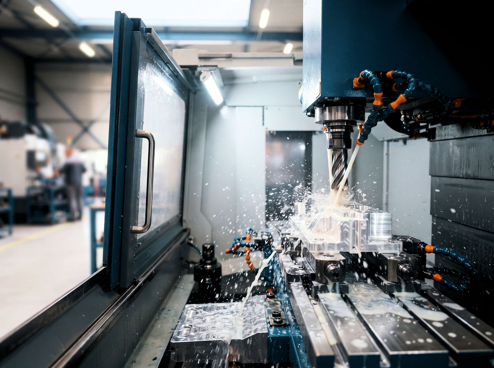
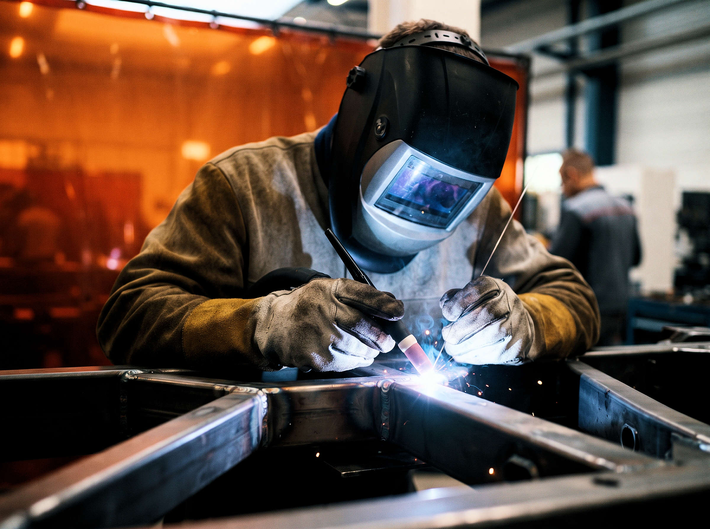
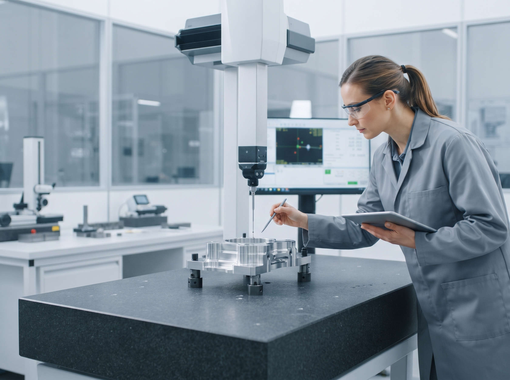

Savoir-faire
De la lecture du plan à l'expédition, tout se fait dans notre atelier d'Angers.
De votre demande à la livraison
Étude
Analyse du plan, choix matière, devis sous 48 h.
Méthodes
Gamme de fabrication, programmation CN, outillages.
Fabrication
Usinage, soudure, reprises et finitions.
Contrôle
Mesure tridimensionnelle et rapport de contrôle.
Livraison
Emballage adapté et documents de traçabilité.

Usinage de précision
- Tournage CN jusqu'à Ø 400 mm et 1 000 mm de long.
- Fraisage 3 et 4 axes, courses jusqu'à 1 600 × 800 × 700 mm.
- Aciers, inox, aluminium, laiton, plastiques techniques.
- Tolérance courante ± 0,01 mm.

Mécano-soudure
- Soudage MIG, MAG et TIG, acier et inox.
- Ensembles jusqu'à 3 m et 1,5 tonne.
- Soudeurs qualifiés, modes opératoires documentés.
- Reprise d'usinage après soudure pour les cotes fonctionnelles.

Contrôle et qualité
Notre système de management de la qualité est certifié ISO 9001 depuis 2008.
- Salle de métrologie régulée en température.
- Machine à mesurer tridimensionnelle et contrôle en cours de fabrication.
- Certificats matière et rapports de contrôle livrés avec chaque lot.
Parc machines
| Équipement | Usage | Nombre |
|---|---|---|
| Tours à commande numérique | Pièces de révolution, Ø 400 mm max. | 4 |
| Centres d'usinage verticaux 3 axes | Fraisage, perçage, taraudage | 3 |
| Centre d'usinage 4 axes | Pièces à faces multiples | 1 |
| Postes de soudage MIG/MAG et TIG | Mécano-soudure acier et inox | 6 |
| Machine à mesurer tridimensionnelle | Contrôle dimensionnel | 1 |
| Scie à ruban automatique | Débit matière | 2 |